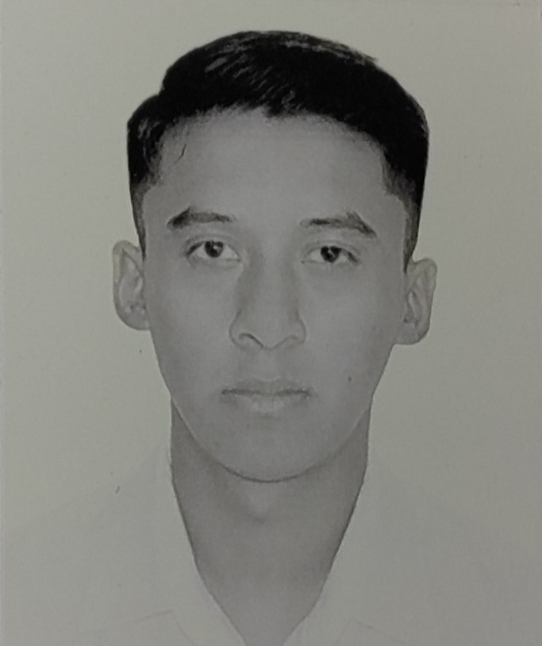

SACC es un sistema propuesto para clínicas, pensado para gestionar de manera eficiente el funcionamiento interno de las clínicas: inventario, citas, pago, historial clínico, proveedores, paciente, rehabilitación, personal y servicios.
La problemática a resolver es la falta de un sistema integrado para la gestión y control de procesos internos en clínicas, lo que genera problemas en el registro de citas, inventario, pagos, historiales clínicos y atención al paciente. Esta situación dificulta el seguimiento adecuado en clínicas.
Sistematizar los procesos de gestión y control de citas, inventarios, pagos, historiales clínicos y atención médica mediante el desarrollo de un sistema digital integrado, con el fin de optimizar el seguimiento de dichos aspectos.
En el desarrollo del sistema se utilizó la estrategia de "divide y vencerás", que busca identificar unidades de desarrollo lo suficientemente concisas para ser trabajadas de manera independiente, pero que también sean fáciles de integrar en el sistema completo.

|
 | ||
| Barrera Diaz José Axel | Diaz Quijano Marco Antonio | Lopez Cornejo Viridiana Josselyne | Rodríguez Henández Iván Yazeth |
| 22011550@itsoeh.edu.mx | 22011538@itsoeh.edu.mx | 22011469@itsoeh.edu.mx | 21011713@itsoeh.edu.mx |